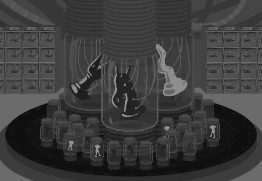

The game does create the ASTEROIDS the ECTOBIOLOGY LABS used to create the PLAYERS and CARAPACIANS just like in the original comic. The first thousand was AUTOMATICALLY created and sailed out to their own lands.
When creating their society they realize that they wanted people to RULE over them in a long lasting way. After communicating with each other, both the citizens of DERSE and PROSPIT band together to create 5 NEW CARAPCIANS, a KING, QUEEN, KNIGHT, BISHOP and ROOK.
> ==>